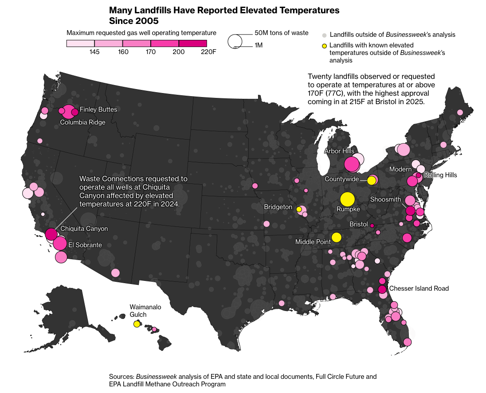

Arbor Hills SET Evidence
Local primary records now extend through June 2026, and show which decisive measurements are still missing.

Read the article ↗EGLE identified an Elevated Temperature Landfill event that it said was already impairing the gas-collection system.
Down-hole profiling reached 178.5°F at 60 feet, much hotter than the wellhead measurement.
AHW272R4 set a new record-high wellhead temperature of 177°F. Methane at 8.1% and oxygen at 7% put the chemistry in the right zone for a subsurface elevated temperature event.
Arbor Hills SET Evidence
Regulator names the condition
EGLE identifies an Elevated Temperature Landfill event, likely ongoing for more than a year and impairing the gas system.
Heat confirmed below the surface
Down-hole profiles at well 312R reach 178.5°F at 60 feet, hotter than the corresponding wellhead record.
New record high; chemistry in the SET zone
March 2025: new all-time record high wellhead temperature of 177°F. Methane at 8.1% and oxygen at 7% put the chemistry in the right zone for a subsurface elevated temperature event.
Peak cools; pattern remains
In 2026 H1, 26 wells reached ≥131°F and filed CO readings reached 100 ppm.
What the record establishes
Sources: EGLE filings and project analyses; Trisha Kunst public comment; Todd Thalhamer review.
Host agreements can change later; minimum criteria can make evidence and monitoring requirements apply to the proposed expansion.
Arbor Hills is Washtenaw County's only landfill, and its own records document recurring heat and abnormal gas chemistry.
Arbor Hills SET Evidence
A lower peak is encouraging. It is not a substitute for the missing subsurface and chemistry measurements.
Wells meeting temperature screening markers
Source: Aug. 24, 2026 wellfield CSV; as-found half-year maxima; HOV caveats retained. Four consecutive Wells of Interest (WOI) periods, 2024 H2–2026 H1.
The 131°F and 145°F counts are analytical screening categories. They are not a count of regulatory violations.
A county-selected SET specialist should review the 2025 episode, the 2026 H1 record, monitoring gaps and safeguards.
Place monitoring, action levels, public reporting and corrective plans in the minimum siting criteria.
Arbor Hills SET Evidence
The 2026 H1 record shows improvement and new CO data, not the missing measurements needed to classify the 2025 episode.
Field-wide max wellhead temperature (°F) · AHW well ID below
The line shows the maximum valid recorded wellhead temperature across all available wells in each calendar half-year. It is not an average and does not imply continuous monitoring. The source's documented AHWW/AHW prefix inconsistency is normalized to AHW for display labels only. The three dotted reference lines are visual comparison levels, not additional observations.
Source: four consecutive WOI periods and the full 2021 H2–2026 H1 trend, recalculated from the Aug. 24, 2026 wellfield CSV release; half-year maxima use validation_ok=yes rows and all available wells.
Early-2025 episode: highlights from filed data
Same reading · March 14, 2025 peak
Separate reading · Feb.–Mar. 2025 monthly maximum
Separate reading · April 11, 2025
These five figures are not one simultaneous sample. The temperature, methane and oxygen readings are the same March 14, 2025 measurement; the CO maximum and the CH₄/CO₂ minimum are separate readings on different dates.
The record does not determine whether the March 2025 AHW272R4 episode was a SET event. GFL's statement that an episode was not SET concerned a different well, AHW263R5, not this one. EGLE has not stated it accepted a no-SET conclusion for this episode. Regardless, without more data any conclusions can only be professional opinions rendered. This episode is separate from the 2026 30-well SSO cluster discussed elsewhere in this record.
Why was 2025 downhole measurement trigger compliance never verified? What do the completed 2026 Gas Collection and Control System (GCCS) designs change, and do they address the root cause?
Will independent review and real-time public monitoring be required before expansion or written into minimum criteria?
The H1 2026 WOI report confirms the 2026 GCCS design plans are complete, though not their content. This is a disclosure and risk-control question, what the redesign decided and whether it addresses the 2025 event's root cause, not a claim that the redesign resolves or fails to resolve anything.
Sources: WOI data through June 2026; EGLE correspondence; Thalhamer review; Full Circle Future; Bloomberg.
Todd Thalhamer, P.E.'s review was conducted by email from supplied records. It was not a site visit or an assessment of current operations.